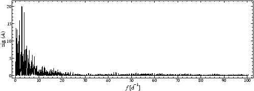

This module generates steps following two random processes:
The keyword sim:rndsteps is given with four floating-point parameters. They specify
Example. The sample project sim-rndsteps illustrates the simulation and analysis of random steps upon the sampling of the V photometry of IC4996#89. The simulator replaces the original observable values, according to the line
sim:replace
in the file sim-rndsteps.ini. The line
sim:rndsteps 0 0 0.5 0.07
in the file sim-rndsteps.ini produces random steps the values of which are distributed according to a Gaussian with standard deviation 0.5. The expected distance in time of consecutive steps 0.07 days. The resulting light curve is displayed in Fig.34.

Since the observables are constant between the steps, one may consider each of the corresponding time intervals to contribute a spectral window to the DFT, or significance spectrum, correspondingly. The significance spectrum associated to the light curve in Fig.34 is displayed in Fig.35 and respresents such a superposition of spectral windows.


Next: Zero-mean adjustment
Up: The Built-in Simulator
Previous: Temporally correlated noise
Contents
Piet Reegen
2009-09-23